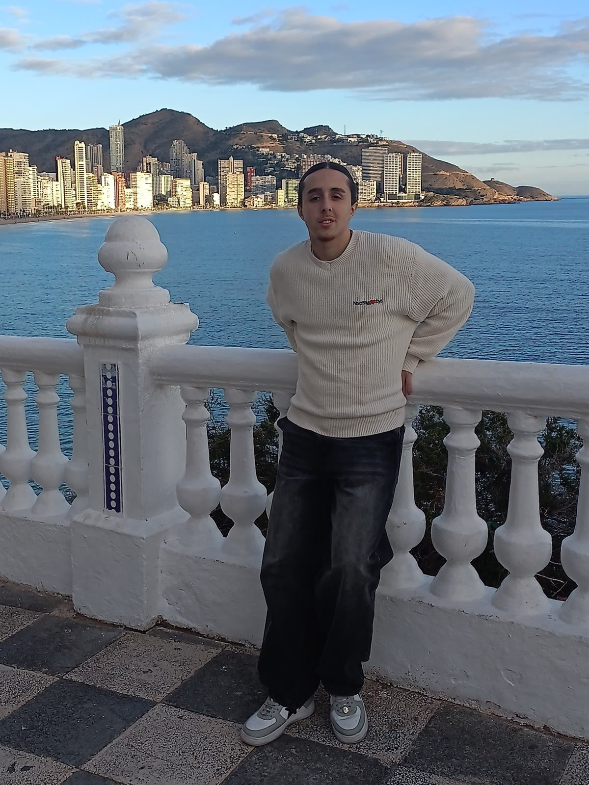
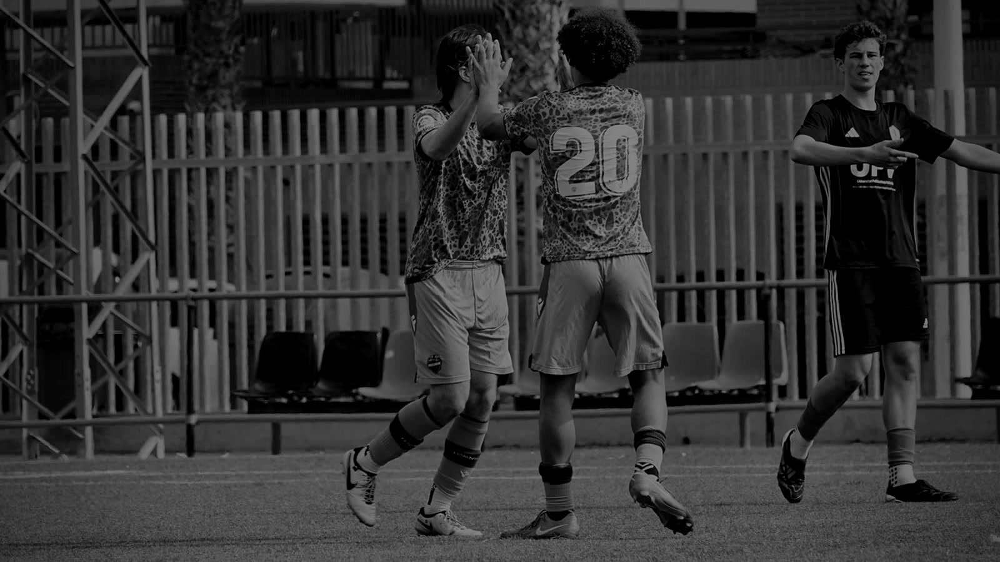
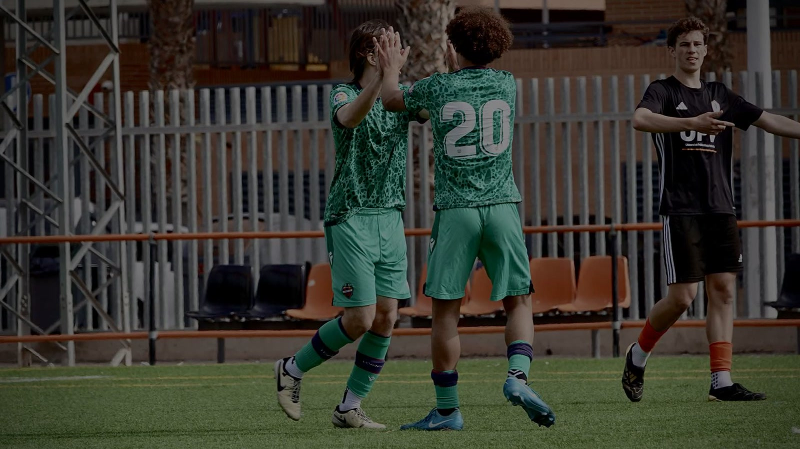
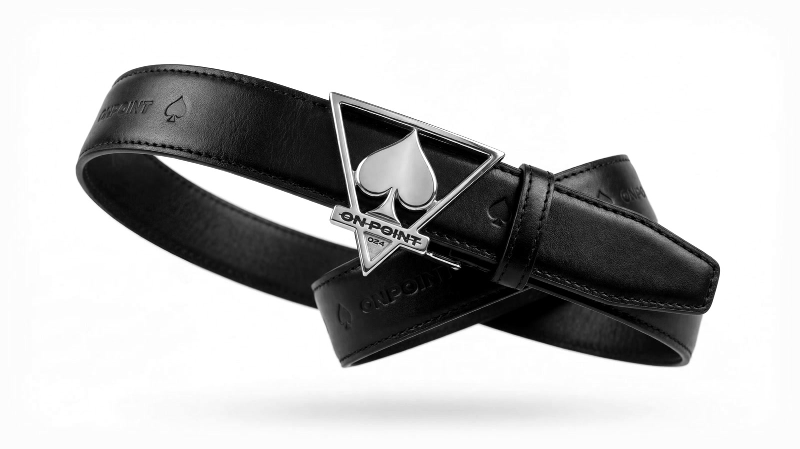
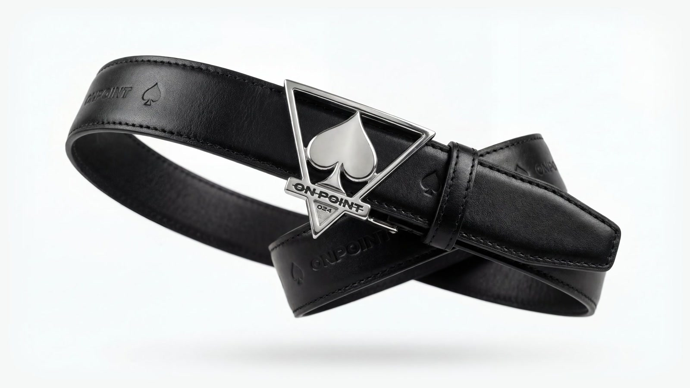
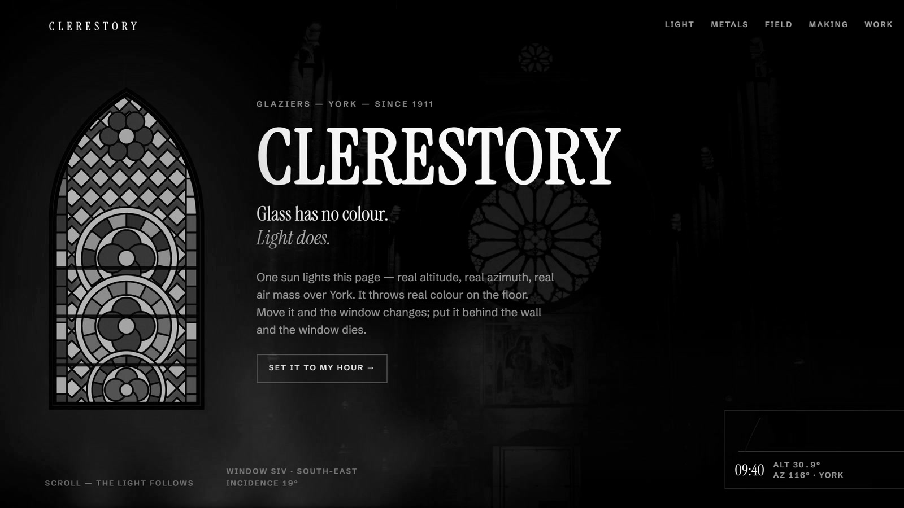
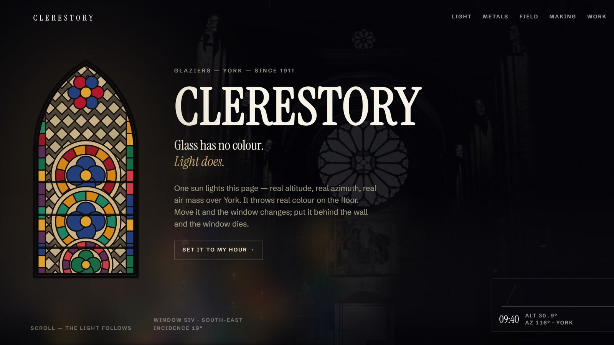

Daci Scurtu — Intrinsicism
Manifesto

Intrinsicism© is a testament to the shift from pursuing success to understanding purpose.
It is rooted in the belief that every individual possesses an inherent worth that exists long before recognition or success.
Our task is not to manufacture value, but to uncover it by understanding the experiences, convictions, and character that define our journey and reveal who we truly are.
Projects

Hey, my name is Dacian Scurtu — a business student, a footballer, and a creative director specialising in web design, currently based in Valencia, Spain.
Intrinsicism began as an attempt to build a portfolio and showcase my newfound passion for creative direction and immersive experiences in all sorts of modes and contexts. However, it quickly became far more personal: an exploration of identity, purpose, and the experiences that shaped who I am.
Since I am very much in the process of starting my professional career, I couldn’t just compile a collection of projects or testimonials.
Instead, I built a visual narrative that represents the path to understanding intrinsic value and purpose, in the hope of attracting partnerships and guidance from those who relate, or who see the value in what I have to offer.
My portfolio mirrors my own journey and the key components of my life, down to the simple details, and the impact they have had on shaping me as a character, regardless of how unrelated to each other they may seem.
-
Football


Football taught me resilience and composure under pressure.
-
Business


Business introduced me to strategy, opportunity and the way ideas become reality.
-
Creative
direction

Creative direction and web design became the language through which those experiences could be expressed.Disciplines: Art direction · UX / UI design · Web design · Motion & interaction · Front-end build
Moving between living in Spain, England and Australia exposed me to different cultures, perspectives and ways of thinking, each becoming another layer of the identity I continue to uncover.
Zaragoza
Spain